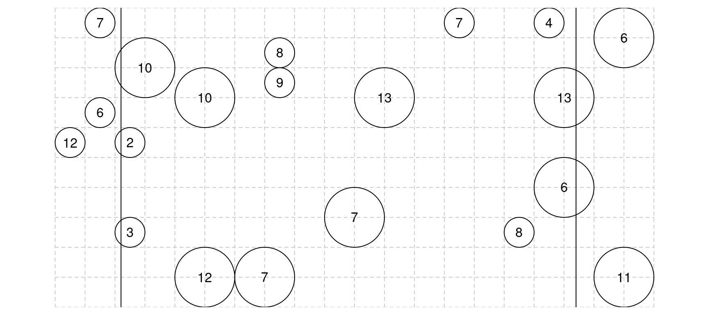

You can also download a PDF copy of this document.
| i | 1 | 2 | 3 | 4 | 5 |
|---|---|---|---|---|---|
| 1 | 0.3 | 0.0 | 0.2 | 0.2 | 0.2 |
| 2 | 0.0 | 0.7 | 0.4 | 0.5 | 0.5 |
| 3 | 0.2 | 0.4 | 0.6 | 0.3 | 0.3 |
| 4 | 0.2 | 0.5 | 0.3 | 0.7 | 0.4 |
| 5 | 0.2 | 0.5 | 0.3 | 0.4 | 0.7 |
Note that the values along the “diagonal” (i.e., from top left to bottom right) are the first-order inclusion probabilities, whereas the values not along this diagonal are the second-order inclusion probabilities. The reason why it makes sense to represent the inclusion probabilities this way is that the second-order inclusion probability of an element with itself (e.g., \(\pi_{ii}\)) equals the first-order inclusion probability (e.g., \(\pi_i\)). Verify these inclusion probabilities by computing them yourself from the sampling design. Note that the second-order inclusion probabilities are symmetric in the sense that \(\pi_{ij} = \pi_{ji}\) so you only need to verify five first-order inclusion probabilities and ten second-order inclusion probabilities.
Consider the sampling design given in the previous problem. Assume that \(y_1\) = 1, \(y_2\) = 2, \(y_3\) = 4, \(y_4\) = 2, and \(y_5\) = 1. Confirm that the estimates of \(\tau\) using the Horvitz-Thompson estimator are, approximately, 12.86, 11.43, 7.62, 12.38, 10.95, and 7.14 for samples \(\mathcal{S}_1\), \(\mathcal{S}_2\), \(\mathcal{S}_3\), \(\mathcal{S}_4\), \(\mathcal{S}_5\), and \(\mathcal{S}_6\), respectively. Also use the Horvitz-Thompson estimator to compute an estimate of \(\mu\) two ways: one assuming you know that the number of elements in the population is known to be five, and another where the number of elements in the population is unknown. You should confirm that the estimates based on the six samples with a known number of elements in the population are approximately 2.57, 2.29, 1.52, 2.48, 2.19, and 1.43, respectively, and that the estimates based on the six samples with an unknown number of elements in the population are approximately 2, 1.78, 1.23, 2.74, 2.42, and 1.67, respectively.
Consider the sampling design described in the previous problems. Suppose that we have an auxiliary variable \(x_i\) where \(x_1\) = 9, \(x_2\) = 21, \(x_3\) = 18, \(x_4\) = 21, and \(x_5\) = 21, and it is known that \(\tau_x\) = 90. Verify that the generalized Horvitz-Thompson estimator that is based on the ratio estimator produces an estimate of \(\hat\tau_y\) \(\approx\) 12.9 if the sample is \(\mathcal{S}_1\).
| Element | \(y_i\) | \(\delta_i\) |
|---|---|---|
| \(\mathcal{E}_1\) | 4 | 0.1 |
| \(\mathcal{E}_2\) | 1 | 0.2 |
| \(\mathcal{E}_3\) | 2 | 0.3 |
| \(\mathcal{E}_4\) | 3 | 0.4 |
Confirm that the estimate of \(\tau\) using the Hansen-Hurwitz estimator approximately 29.17, and that the estimate of \(\tau\) using the Horvitz-Thompson estimator is approximately 18.59.
The figure below shows the the results of a survey using the line-intercept method. The selected objects, represented by circles, are those intercepted by the two transect lines. The value of the target variable is shown as the number within each object.

Confirm that the estimates of \(\tau\) based on the left and right transect lines are 200 and 190, respectively, using the Horvitz-Thompson estimator. These can be averaged together to produce and estimate of \(\tau\) of 195.| Target Variable | Survey Weight |
|---|---|
| 5 | 4.0 |
| 3 | 2.5 |
| 2 | 2.0 |
Verify that based on this information alone an estimate of \(\tau\) is \(\hat\tau\) \(=\) 31.5, and an estimate of \(\mu\) is \(\hat\mu\) \(\approx\) 3.7.